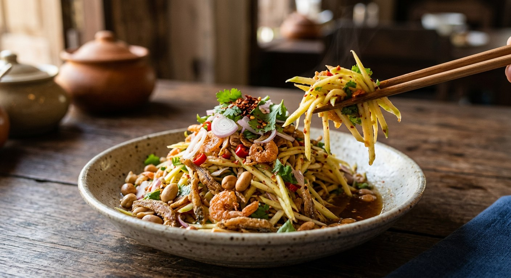

Unripe mango shredded into crisp strips and shocked in ice, then tossed hot-sour-salty with dried shrimp, roasted peanuts and crispy fish — the street salad that turns a rock-hard fruit into a cold beer's best friend.

ยำมะม่วง is what Thailand does with mangoes that will never ripen: the salad varieties — aroifin names มะม่วงแก้ว and มะม่วงแรด — picked rock-hard, with taut skin and dense flesh, then shredded and dressed in the same hot-sour-salty frame as som tum. The sourness is the engine. TrueID's WeenayA makes the point explicit: the lime juice in the dressing exists to be adjusted against the mango itself — if the fruit is properly sour, you reduce the lime or skip it entirely.
The dressing is the yam three-taste: fish sauce for salt, palm sugar for sweet, lime — or tamarind — for sour, with freshly roasted chilli powder for heat. Aroifin builds the sweet layer as น้ำตาลเคี่ยว, palm sugar simmered with tamarind water into a sticky syrup, which rounds the acidity without drowning it. The texture stack is dried shrimp for chew, roasted peanuts and crispy fish for crunch, shallots for bite — and the shreds themselves, kept crisp by a five-to-ten-minute ice soak after shredding.
The dish is famously a template. Kapook's four-recipe roundup signs off: use crispy fish, blue swimmer crab, salmon, or sweet clams — or all of them, as you like. The old-style version, which Kapook calls hard to find now, skipped the fresh protein entirely: dried shrimp, roasted snakehead fish powder and toasted coconut doing all the work. Aroifin's nutrition card sizes the whole three-serving bowl at about 650 kcal — most of it peanuts, fish and sugar.
| Thai | English | Amount |
|---|---|---|
| มะม่วงเปรี้ยว | Sour green mango (kaew or raet variety) | 2 |
| หอมแขก | Shallots | 2 |
| กุ้งแห้ง | Dried shrimp | 2 tbsp |
| ปลากรอบ | Crispy fried fish | to taste |
| ถั่วทอด | Fried peanuts | to taste |
| น้ำปลา | Fish sauce | 1 tbsp |
| พริกป่น | Dried chilli powder, freshly roasted | 2 tbsp |
| มะนาว | Lime juice | 3 limes |
| น้ำตาลเคี่ยว | Simmered palm-sugar syrup | 4 tbsp |
The syrup (น้ำตาลเคี่ยว): 1 cup palm sugar, 3 tbsp concentrated tamarind water, ½ cup water — simmered over low heat, stirring, until thick and sticky. The old-style bowl (Kapook, โบราณ): the same dressing but no syrup — palm sugar straight in, with shredded carrot, red chillies, dried shrimp, ready-made snakehead fish powder, toasted coconut and roasted peanuts. The crab-roe bowl (TrueID): ½ cup steamed crab roe or salted egg, ¼ cup fried cashews, Chinese celery, and the lime trimmed to the mango's sourness. The blended bowl (Bosch Thailand): garlic, peanuts, dried shrimp and chillies blended into a coarse paste, brown sugar for palm sugar, plus yardlong beans and cherry tomatoes (see the disagreements below).
The acid. Lime is the default, but the dose is contested: TrueID's home-style version uses only ½ tbsp and says skip it entirely if the mango is properly sour; Kapook's crispy-fish version pours 2 tbsp of tamarind water into the dressing alongside the lime; Aroifin hides the tamarind in the palm-sugar syrup instead. Everyone agrees the sourness should mostly come from the fruit.
The sugar. Palm sugar almost everywhere — but Pantip's crab version (via Kapook) uses plain white sugar, Bosch Thailand uses brown sugar, and Aroifin and TrueID's crab-roe bowl pre-cook it into น้ำตาลเคี่ยว syrup before it meets the mango.
The cut. Shredded on a grater into strips (Aroifin, Kapook's salmon and clam versions), chopped (Kapook's crispy-fish version), or sliced thin with a knife (Bosch). Only Aroifin warns against shredding too fine, and only Aroifin and the salmon version ice-soak the shreds afterwards.
The protein. Dried shrimp is the constant. After that it is a free-for-all: crispy fried fish and cashews (Kapook, Aroifin), steamed crab roe and salted egg (TrueID), blue swimmer crab marinated in fish sauce and frozen ten minutes (isolateboy via Kapook), salmon and avocado (Kapook), sweet clams with lemongrass and mint (นิตยสารแม่บ้าน), or snakehead fish powder and toasted coconut — no fresh protein at all (the old-style recipe).
The dressing technique. Bosch Thailand blends garlic, peanuts, dried shrimp and chillies into a coarse paste that carries the dressing — the only source that does. Every other recipe keeps the dressing liquid and the crunch pieces whole. Bosch also adds yardlong beans and cherry tomatoes, which no other source uses.
The herbs. Chinese celery (TrueID, the crab version), spring onion (the salmon version), coriander (Bosch), mint (the clam version) — or none at all (Aroifin, the old-style bowl).
This recipe is translated from the following Thai-language sources. Where they disagree, we've said so.
1. Aroifin — "วิธีทํา ยํามะม่วง แซ่บๆ เปรี้ยวเผ็ดครบรส จี๊ดถึงใจ" by mimi (the recipe used here) — aroifin.com
2. Kapook — "ยำมะม่วงสูตรโบราณ หอมมะพร้าวคั่วพ่วงวิธีปอกมะม่วงดิบไม่ให้ดำ" (the old-style bowl) — cooking.kapook.com
3. Kapook — "4 เมนูยำมะม่วง แซ่บสะท้านอร่อยแรงพร้อมสูตรน้ำยำ" (the crispy-fish, crab, salmon and clam versions) — cooking.kapook.com
4. TrueID Food — "แจกสูตรยำมะม่วงแซ่บซี๊ดโดนใจสายยำ ทำเองได้ที่บ้าน" by WeenayA (the crab-roe and home-style versions) — food.trueid.net
5. Bosch Thailand — "สูตรยำมะม่วงกุ้งแห้ง (อาหารเรียกน้ำย่อย)" (the blended-dressing version) — bosch-home.in.th